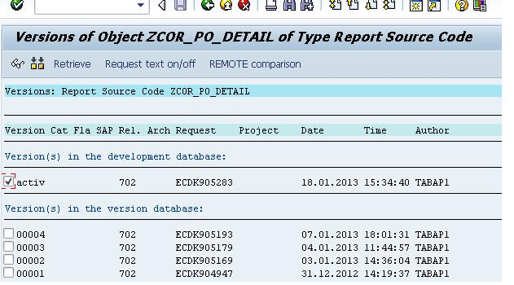

SAP Stammtisch Luzern
@majcon
Continuous integration in an ABAP environment with git-enabled CTS
history of version control
3 types of version control

historie of git
working with git
Text
git flow
gui/console/IDE
Intro abapGit
ABAP + git = abapGit
Open Source
(MIT license)
abapGit.org
Founder
Lars Hvam Peterson
started 2014
hosted @GitHub

> 80 supported object types (CLAS, PROG, TABL, ...)
~ 72 000 LoC
Why abapGit? - Limitations in ABAP version control
- Versions are written by transport release
- Temporary versions are deleted
- Limited control for developers
- No easy tracking and undoing of changes
- No distributed development
More Safety and transparency
Enabler for DevOps
Enabler for code reviews
Enabler for open source - dotabap.org
BUT: No substitute for SAP transport and release management
Works with
- GitHub
- Gitlab
- Bitbucket
- SCP
- TFS
- abapGit server
- ...
package
+
sub packages
=
git repository
SAP uses abapGit
abapgit and beyond
- CI / CD
- testautomation
- dedicated DEV sytems
- moore tools
- and more...
more information
Using git for Reviews
- Using Github
- Pull Request
- https://github.com/features/code-review/
- Other Online Provider -> Wording is different
- SAP uses Gerrit
- reviewable.io
TCR
Test Commit & Revert
Newest Programming Method invented by Kent Beck
=> Needs Git + Automation
<DP>
Deliberate Programming
invented by Ralf Westphal and Damir Majer. Systematic Approach to getting better Software Craftsman
=> Needs Git + Automation